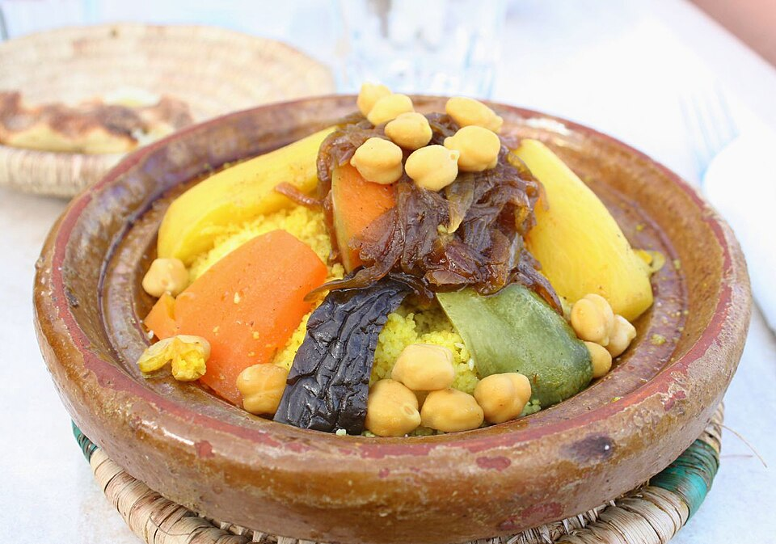
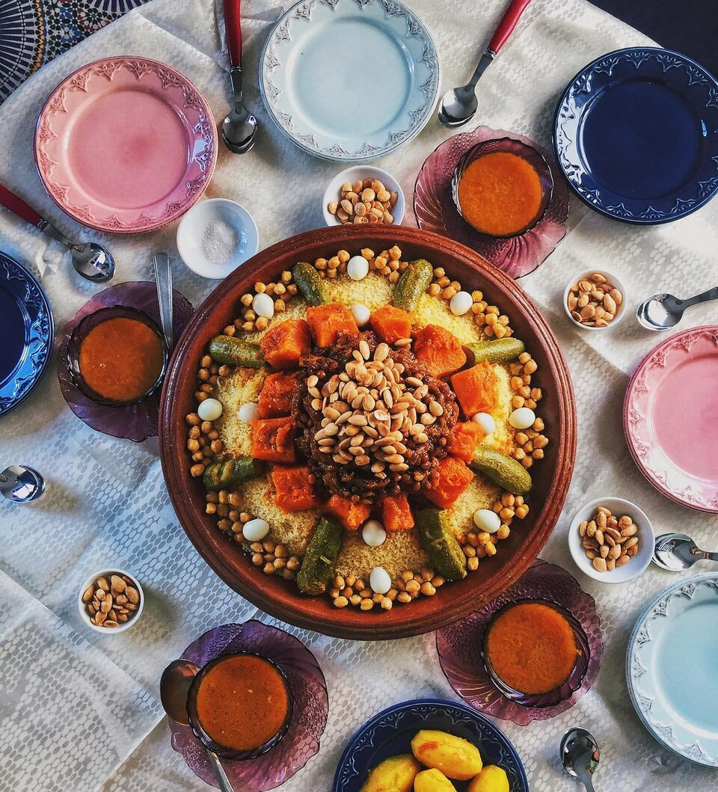
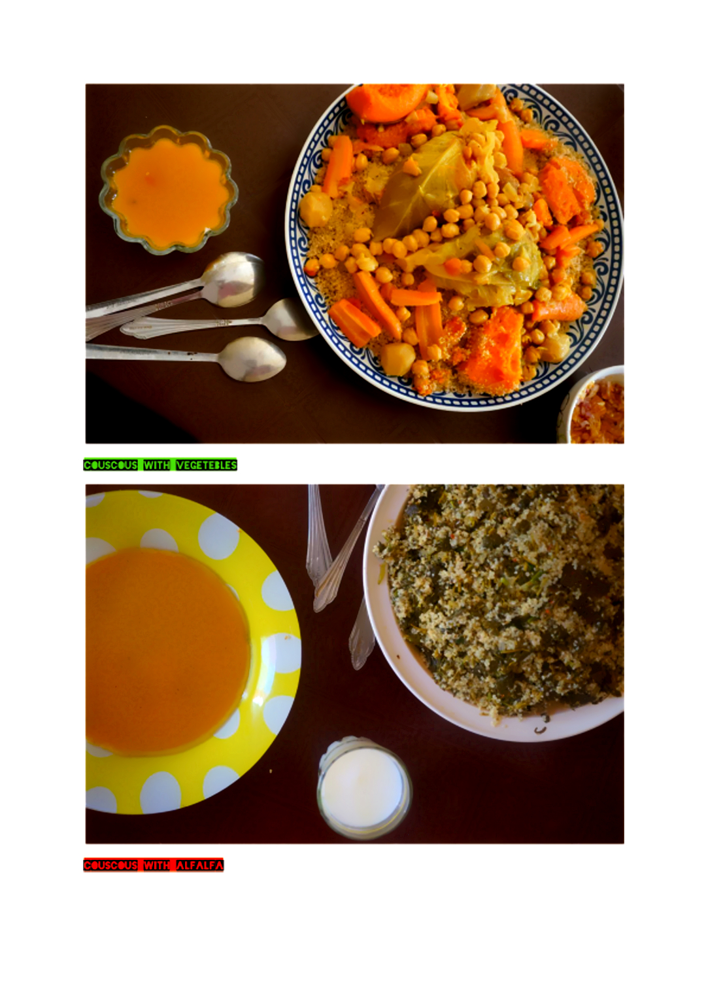
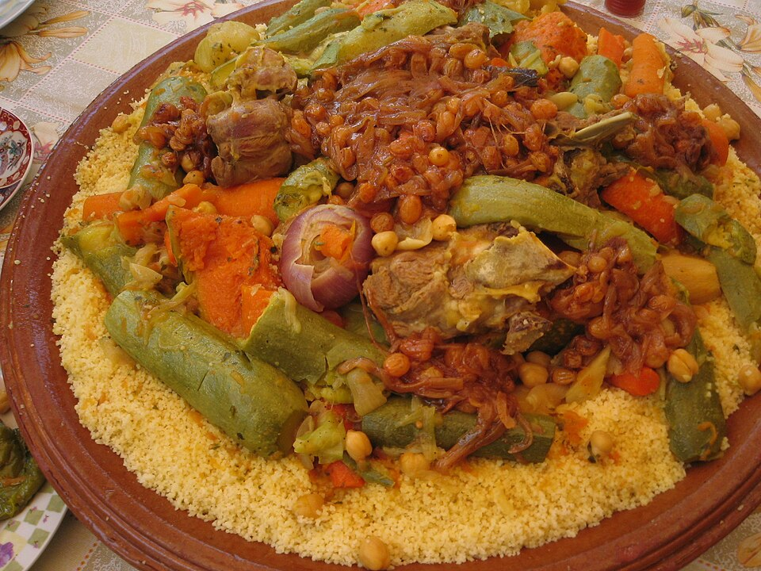

Cuscús de verdures: sabor marroquí

El cuscús és un plat molt conegut al Marroc i en altres països del nord d'Àfrica. La seva base és la sèmola de blat dur, que s'acompanya de verdures, brou i espècies.
Una versió amb verdures pot incloure pastanaga, carbassó, ceba i cigrons. Els ingredients i els condiments poden variar segons la regió i les tradicions de cada família.
Tradicionalment, la sèmola es prepara al vapor i se serveix amb les verdures i el brou. És un plat que es pot compartir al centre de la taula i que forma part de la cultura gastronòmica marroquina.
Ingredients
- Sèmola de blat dur
- Verdures (pastanagues, carabassó, ceba, cigrons)
- Espècies (comí, coriandre, canyella, pebre negre)
- Oli d'oliva verge extra
- Sal al gust
Preparació
- Prepara les verdures, renta-les i talla-les a trossos.
- Cou les verdures amb aigua o brou i les espècies fins que estiguin tendres.
- Prepara la sèmola seguint les instruccions del paquet.
- Serveix la sèmola amb les verdures i una mica del brou de cocció.
Galeria del cuscús



Vídeo de preparació
Vídeo de preparació del cuscús de verdures. (en castella) Veure el vídeo a YouTube .